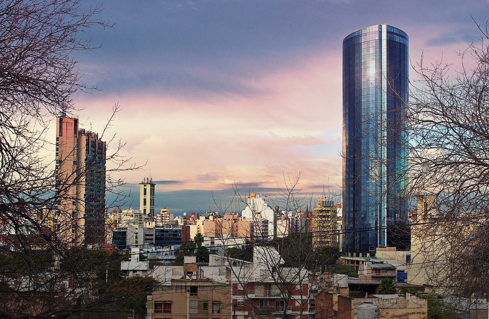

Argentina, the eighth-largest nation in the world, offers visitors a wide variety of experiences as it encompasses a variety of landscapes from the Atlantic Ocean to the Andes Mountains. Argentina beckons travel and exploration, from the energetic streets of Buenos Aires to the untainted wildness of Patagonia. Here is a comprehensive guide to help you explore the attractions of this fascinating nation:
Start your journey around Argentina at Buenos Aires, the capital city renowned for its lively neighborhoods, European flair, and intense tango scene. Discover San Telmo's old quarter, where hip cafes and vintage stores coexist with colonial architecture. See the famous Plaza de Mayo, which is bordered by famous buildings like the Metropolitan Cathedral and the Casa Rosada presidential residence. Explore the vibrant La Boca district, known for its Caminito street that is dotted with vibrantly painted homes and is the site of street tango performances. Wander the chic Recoleta boulevards, pay a visit to the Recoleta Cemetery (where Eva Perón is interred), and discover the hip Palermo neighborhood with its parks, shops, and nightlife.
Visit Argentine Patagonia in the south, a huge area known for its natural beauty and outdoor pleasures. Discover the breathtaking Perito Moreno Glacier in Los Glaciares National Park, where you can hike on the ice or see ice calving into Lake Argentino's turquoise waters from a boat trip. In close proximity, the village of El Calafate functions as the park's entrance and provides chances for hiking, horseback riding, and birdwatching. Proceed to Tierra del Fuego, often known as the "Land of Fire" in Argentina, which is renowned for its striking scenery and the world's southernmost city, Ushuaia. See sea lions and penguins while cruising the Beagle Channel, or take the End of the World Train through Tierra del Fuego National Park, which is home to the southern ocean's edge where Andean peaks meet.
Travel west to Mendoza, the prime wine area of Argentina, which is tucked away in the Andes Mountain foothills. Visit vineyards that produce Argentina's signature grape variety, Malbec, and partake in wine tastings at Maipú and Luján de Cuyo. Ride a bike or take a drive along the picturesque Ruta del Vino to experience wines such as Cabernet Sauvignon and Torrontés. Beyond wine, Mendoza has outdoor pursuits including rafting on the Mendoza River and hiking in the Aconcagua Provincial Park, which is home to South America's tallest summit. Take a stroll around the city's verdant plazas and discover its cultural landmarks, such as Plaza Independencia and the Museo Municipal de Arte Moderno.
See one of the most breathtaking natural wonders in the world, Iguazú Falls, by traveling north to the Brazilian border. The falls, which are part of the UNESCO World Heritage site Iguazú National Park, are a series of over 250 waterfalls encircled by thick rainforest that span the Iguazú River. Explore the system of paths to vantage points such as Devil's Throat (Garganta del Diablo) to enjoy expansive vistas and thrilling views of the thundering waves. Take a boat ride beneath the falls for an exciting viewpoint, or go on guided nature excursions in the park's subtropical habitat. Experience the sights and sounds of the jungle, along with a variety of species such as toucans, jaguars, and vibrant butterflies, by booking a stay at one of the park's eco-lodges.
Explore the northwest of Argentina, home to picturesque scenery and colonial settlements. Begin in Salta, which is renowned for its vibrant cultural scene and well preserved Spanish colonial buildings. For sweeping views of the city and neighboring valleys, visit Salta's Cathedral and San Bernardo Hill. Travel the breathtaking Quebrada de Humahuaca circuit, designated as a UNESCO World Heritage site, to discover vibrant rock formations, native communities, and historic Inca ruins. Visit places like Tilcara, which has an archaeological museum and the Pucará de Tilcara stronghold, and Purmamarca, which is renowned for the Cerro de los Siete Colores (Hill of Seven Colors).
Discover Cordoba, a province in central Argentina renowned for its natural beauty, old estancias (ranches), and Jesuit tradition. See the Manzana Jesuítica and the colonial-era Cathedral at Cordoba City's UNESCO-listed Jesuit Block. Admire the famed El Panecillo perspective and the Cabildo's architecture as you stroll through the bustling Paseo de las Artes artisan market. Discover the Sierras de Córdoba mountain range outside of the city for outdoor pursuits like hiking, horseback riding, and birdwatching. See the charming communities of La Cumbrecita, a pedestrian-only community tucked away in the foothills, and Villa General Belgrano, well-known for its Oktoberfest celebrations.
Visit the Lake District in Argentina's Patagonia, which is centered on the town of San Carlos de Bariloche, renowned for its chocolate stores, Swiss-style architecture, and breathtaking lakefront location. Discover the pristine lakes of Nahuel Huapi National Park, including Lake Moreno and Lake Nahuel Huapi, encircled by verdant forests and snow-capped peaks. Savor outdoor pursuits like hiking, mountain biking, and fishing in the immaculate wildness of the park. For expansive views of the Andes, enjoy a picturesque drive along the Circuito Chico. In the winter, head to Cerro Catedral for skiing and snowboarding. Visit authentic Patagonian eateries (parrillas) to savor native wines and smoked meats.
Explore the diverse landscapes of Buenos Aires Province, from historic estancias to pristine beaches along the Atlantic coast. Experience the traditional gaucho culture of Argentina by visiting traditional estancias like Estancia La Candelaria or Estancia El Ombú de Areco. These places offer traditional asado barbecues, folk music, and horseback riding. Relax on the beaches of Mar del Plata, Argentina’s most popular coastal resort town, famed for its art deco architecture, vibrant promenade (La Rambla), and seafood restaurants. Explore Colonia del Sacramento, a UNESCO-listed village in Uruguay with its charming seafront, colonial houses, and cobblestone streets across the Río de la Plata.
Go back to Buenos Aires to explore the dynamic districts and rich cultural heritage of the city more thoroughly. See a tango performance in San Telmo or peruse Puerto Madero's galleries of modern art. Visit the Teatro Colón opera house for a guided tour or witness a performance of classical music or ballet. Visit Recoleta, which is home to the National Library and the Recoleta Cultural Center, which is built in a former convent, to learn about the literary heritage of the city. Discover Argentine and worldwide art collections at the Museo Nacional de Bellas Artes, which feature pieces by Goya, Rembrandt, and regional masters like Xul Solar.
Travelers can take use of Argentina's well-developed transportation system, which includes long-distance buses, domestic flights, and rental cars for visiting far-flung areas. There are many different ways to stay, from affordable hostels and rustic estancia stays to opulent hotels and boutique lodges. The Argentine Peso (ARS), the official currency of Argentina, is widely used throughout the nation. While credit cards are often accepted in urban and tourist destinations, it's best to have cash on hand for smaller transactions and in more rural places. Buenos Aires, Mendoza, trekking through the vastness of Patagonia, and Malbec tasting in Mendoza vineyards—Argentina offers travelers an incredible experience full of natural beauty, cultural treasures, and friendly locals.